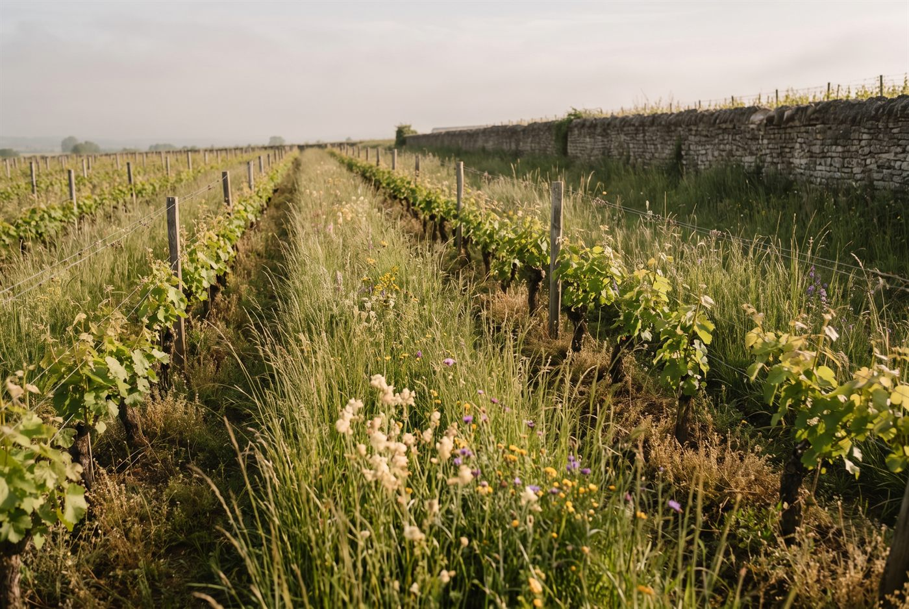

Les domaines · Côte de Beaune · Chassagne-Montrachet
Chassagne-Montrachet · Côte de Beaune
Domaine Armand Heitz
Le terroir sans filtre: des vins vivants, nés d'une viticulture régénératrice.

Ambiance de Chassagne-Montrachet
Héritier d'une lignée de vignerons remontant à 1857, Armand Heitz reprend en 2011 les vignes familiales de Chassagne-Montrachet, jusque-là louées à la maison Drouhin, après des études d'oenologie à Changins, en Suisse. Après quelques années en biodynamie, il oriente le domaine vers l'agroécologie et la permaculture: couverts végétaux, arbres entre les parcelles, paillage et élevage intégré. Les vinifications restent peu interventionnistes, avec levures indigènes et une large part de vendange entière pour les rouges.
Blancs
- Cépage · ChardonnayDiscret dans sa jeunesse, il s'ouvre généreusement après un ou deux ans; élevage de 11 mois avec 20 à 40 % de fûts neufs.
- Cépage · ChardonnaySols de marnes calcaires au sud de Chassagne; un blanc ample à la texture crémeuse, équilibré par une belle salinité.
- Cépage · ChardonnayL'un des climats les plus réputés de Meursault, pour un vin puissant et intense.
- Cépage · ChardonnayLieu-dit de village qui privilégie la fraîcheur et la pureté du fruit.
- Cépage · ChardonnayClimat de haut de coteau, voisin de Chevalier-Montrachet.
- Cépage · Aligoté
Rouges
- Cépage · Pinot Noir
- Cépage · Pinot NoirParcelle à faibles rendements, vinifiée en vendange entière, 14 mois d'élevage avec 20 % de fûts neufs.
- Cépage · Pinot Noir
- Cépage · Pinot Noir
Ces cuvées vous parlent ?
Demander les disponibilités